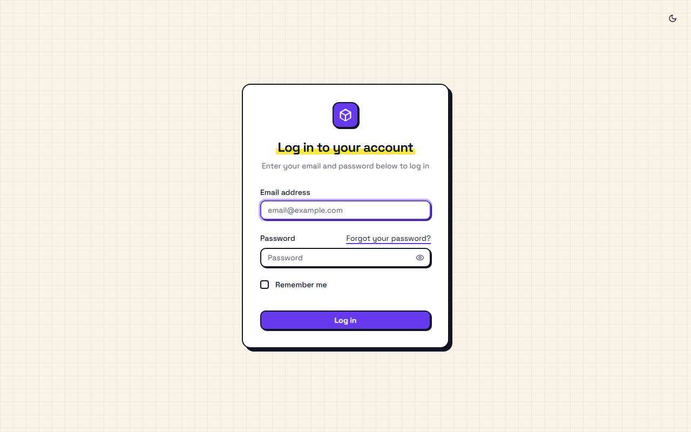
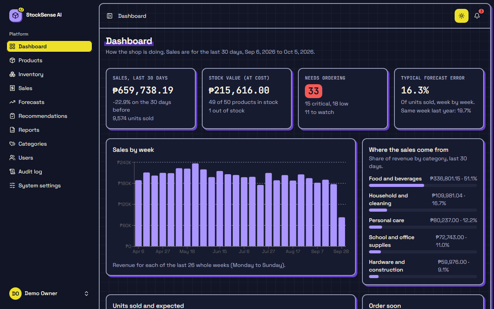
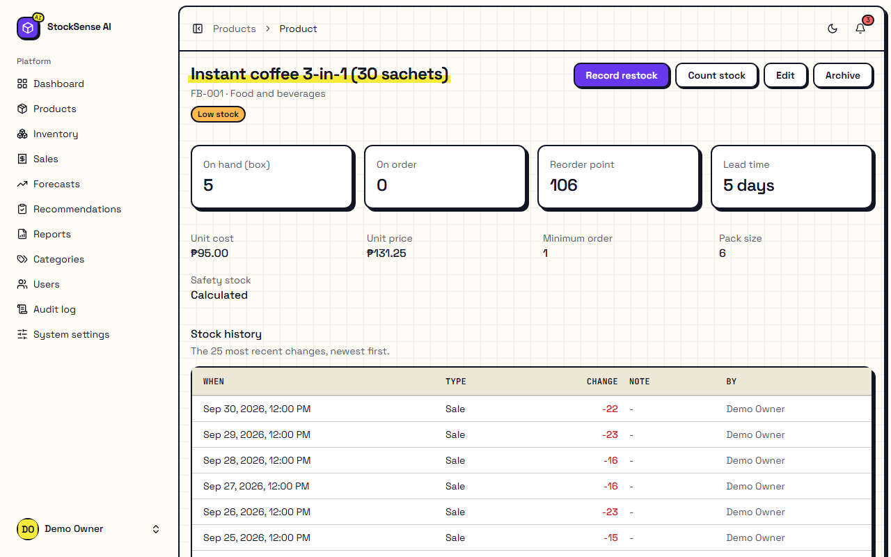
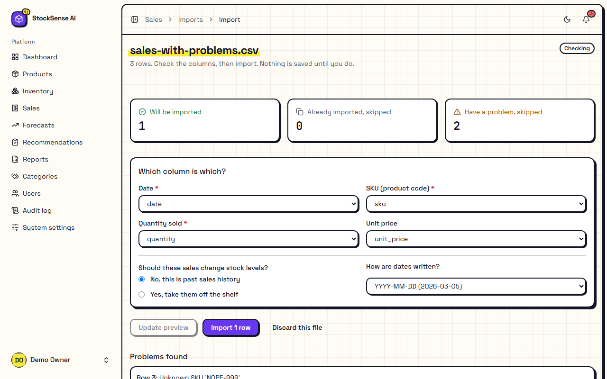
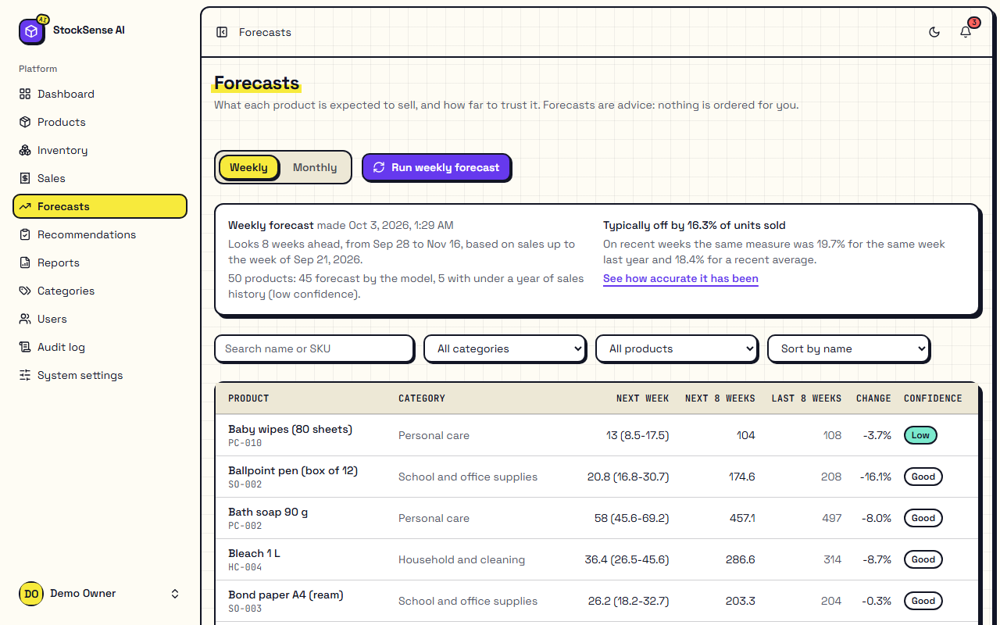
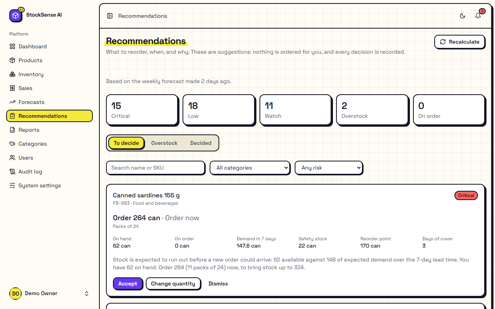
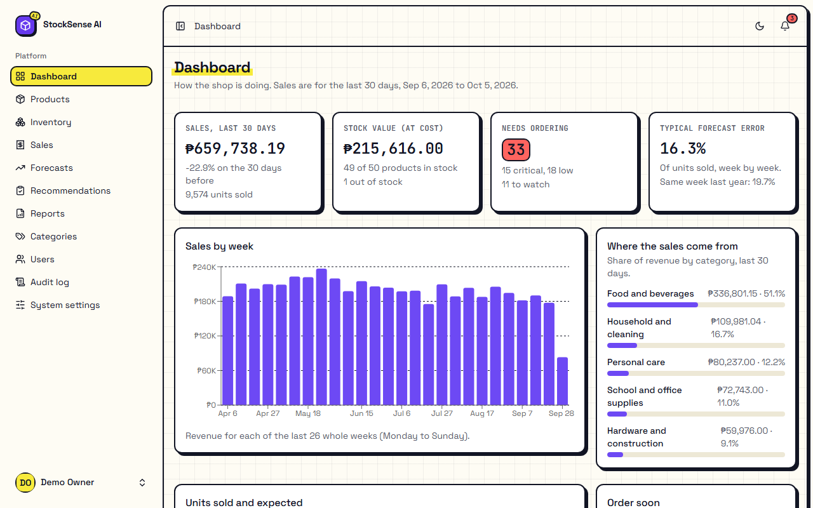
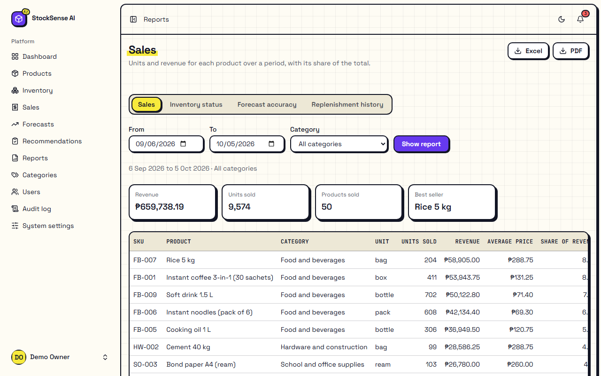

The test's name: what it checks
Who to sign in asBefore you start: anything that must already be true.
- Numbered steps. Do exactly these, in order.
Expected resultWhat you should see. If you see this, the test passes.
Remarks
Student testing manual: install it, test every function, rate it
StockSense AI is a web app that helps a small shop decide what to reorder, how much and when. It forecasts sales with a machine-learning model (XGBoost) and turns the forecast into replenishment advice. It only advises: it never places orders. You will run the whole system on your own computer and check, one function at a time, that it does what it should.
Work through it in order. Part A gets the app running on your computer. Part B is the test cases: each one tells you who to sign in as, what to do, and what should happen. Part C is where you rate the app and report problems.
Before you start: anything that must already be true.
The demo shop. The app comes with a made-up shop: 50 products in 5 categories (food and beverages, personal care, household and cleaning, school and office supplies, hardware) and about two years of sales. No real customer or personal data is in it. Three demo accounts let you test each role; their emails and the shared password are in Appendix 1.
Your changes are real. Tests change the demo data (sales, stock, settings). That is fine. If you want a clean start at any time, reset the database, which takes under a minute.
You will install three things: WSL 2 (a small Linux inside Windows), Docker Desktop (runs the app's parts, called containers) and Git (downloads the code). Then you download StockSense AI and start it with one command.
| Item | Minimum | Better |
|---|---|---|
| Windows | Windows 10 version 22H2, 64-bit | Windows 11 |
| Memory (RAM) | 8 GB | 16 GB |
| Free disk space | 20 GB | 30 GB, on an SSD |
| Processor | 4 cores, with virtualization | 6 or more cores |
| Internet | Needed once, to download about 3 GB. After that the app works offline. | |
Docker needs the processor's virtualization feature.
If it says Disabled, restart the computer, open the BIOS/UEFI setup (usually F2, F10, Del or Esc while it starts), and turn on Intel VT-x, Intel Virtualization Technology, AMD-V or SVM Mode. Ask your instructor if you are not sure: do not change other BIOS settings.
wsl --installInstalling: Windows Subsystem for Linux Installing: Ubuntu The requested operation is successful. Changes will not be effective until the system is rebooted.
wsl --statusDefault Distribution: Ubuntu Default Version: 2
If WSL is already installed, wsl --install says so. Run wsl --update to make sure it is current.
Check it from a terminal:
docker version
docker compose versionClient: Version: 28.x.x ... Server: Docker Desktop Engine: Version: 28.x.x ... Docker Compose version v2.x.x
If docker version shows Client but then an error such as error during connect or cannot connect to the Docker daemon, Docker Desktop is not running yet. Start it and wait for Engine running.
Only 8 GB of RAM? Docker can use up to half of it by default, which is enough. Close other heavy apps (games, many browser tabs) while testing.
Inside Ubuntu, Git is usually already there. Open the Ubuntu app from the Start menu and check:
git --versiongit version 2.x.x
If it says command not found, install it:
sudo apt update && sudo apt install -y gitIn the Ubuntu window (not PowerShell), download the code into your Linux home folder. Keeping it inside Linux makes the app much faster than a folder on C: or D:.
cd ~
git clone https://github.com/KxRaxe/stocksense-ai.git
cd stocksense-ai
lsCHANGELOG.md README.md compose.prod.yaml compose.yaml contracts docker docs e2e ml tests web
Prefer a Windows folder? It also works: run the same commands in PowerShell inside, for example, C:\Projects. The first page load is then slower (up to about 30 seconds after each start) because Windows folders are slow for containers. Everything else in this manual is the same.
Still in the stocksense-ai folder, run:
docker compose up -d --buildThe first time, this downloads the base images and builds the app, then installs the PHP and JavaScript packages inside the containers. Allow 10 to 20 minutes on a typical connection. Later starts take under a minute.
[+] Building ... [+] Running 9/9 ✔ Container stocksense-db-1 Healthy ✔ Container stocksense-redis-1 Healthy ✔ Container stocksense-mailpit-1 Healthy ✔ Container stocksense-ml-1 Healthy ✔ Container stocksense-app-1 Healthy ✔ Container stocksense-horizon-1 Started ✔ Container stocksense-scheduler-1 Started ✔ Container stocksense-vite-1 Started ✔ Container stocksense-web-1 Started
Check that everything is up:
docker compose psEvery service should say Up, and those with a health check (healthy). On the very first start app installs its packages, which takes a few minutes; until then it says (health: starting) and web, vite, horizon and scheduler wait for it. Run the command again after a few minutes. What each container does:
| Container | What it is |
|---|---|
web | The web server you open in the browser (nginx), port 8080 |
app | The application itself (Laravel, PHP) |
vite | Builds the screens (React) while you use them |
horizon | Background worker: imports, forecasts, emails |
scheduler | Runs timed jobs: daily advice, digests, weekly forecasts |
ml | The forecasting service (Python, XGBoost) |
db | The database (PostgreSQL 17) |
redis | The queue and cache |
mailpit | A pretend mailbox that catches every email the app sends |
docker compose exec app php artisan migrate
docker compose exec app php artisan db:seedINFO Running migrations. ... 2026_10_04_100000_create_settings_table ........ 20.92ms DONE Loading categories and products... Loading deliveries... Importing sales through the import pipeline... 30,084 sales imported (0 skipped as duplicates, 0 failed). Database\Seeders\DemoDataSeeder ............... 37,075 ms DONE
Migrating takes under half a minute; seeding about a minute: it loads the 50 products and about 30,000 sales through the app's own importer.
| What | Address |
|---|---|
| StockSense AI | http://localhost:8080 |
| Mailpit (the pretend mailbox) | http://localhost:8026 |
| Forecasting service API docs | http://localhost:8001/docs |
The first page after a start can take up to a minute while the screens are built, and stays blank until then. That is normal. Later pages are quick.

# stop (your data is kept)
docker compose stop
# start again
docker compose startDocker Desktop must be running first. You do not need to build or seed again.
Ready. If the sign-in page appears, set-up is done. Go to the smoke test.
| What you see | What to do |
|---|---|
Bind for 0.0.0.0:8080 failed: port is already allocated | Another program uses that port (often another web server or an old copy of this app). Stop it, or find it with netstat -ano | findstr :8080 in PowerShell. The app also uses ports 5173, 5433, 8001 and 8026. |
| The page stays blank or grey for over a minute | Run docker compose logs vite --tail 30. If it is still installing, wait. If it shows an error, run docker compose restart vite. |
502 Bad Gateway | The app container is still starting. Wait a minute and reload. If it stays, run docker compose ps and docker compose logs app --tail 50. |
Docker Desktop says Engine stopped, or commands say cannot connect | Restart Docker Desktop from its whale menu. If it keeps stopping, your PC may be short of memory: close other apps, or lower Docker's limit (below). |
| Everything is very slow, the fan is loud | Docker may be using too much memory. Create the file C:\Users\<you>\.wslconfig with the two lines below, then run wsl --shutdown in PowerShell and start Docker Desktop again. |
exec /usr/local/bin/entrypoint.sh: no such file or directory | The files were downloaded with Windows line endings. Delete the folder and clone again from the Ubuntu window (step 5), or run git config --global core.autocrlf false first and clone again. |
| Login says the email or password is wrong for the demo accounts | The demo data was not loaded. Run step 7 again (db:seed). |
| A forecast stays on “running” for more than 5 minutes | Run docker compose logs horizon --tail 50 and docker compose logs ml --tail 50, then docker compose restart horizon, and try again. |
| No emails arrive in Mailpit | Emails are sent by the background worker. Check docker compose ps horizon says Up; if not, docker compose up -d horizon. |
This deletes everything you changed and loads the demo shop again (under a minute):
docker compose exec app php artisan migrate:fresh --seedTo remove the app completely, including its data: docker compose down -v, then delete the stocksense-ai folder.
138 test cases in 18 groups. Sign in as the role shown on each case (accounts). Unless a case says otherwise, start from the dashboard.
A quick check that the whole system is alive before the detailed tests. If any of these fail, fix the set-up first (see Troubleshooting).
Before you start: Part A is done.
stocksense-ai folder run docker compose ps.app, db, redis, ml, mailpit, web and vite also say (healthy).http://localhost:8080.http://localhost:8001/health."status":"ok".http://localhost:8026.Before you start: The demo shop is loaded (Part A, step 7).
owner@stocksense.test and password.Before you start: SMK-05 is done. A new copy has no forecast yet, so Needs ordering shows 0 and there is no advice. Many later tests need one.
Sign-in, sign-out, password reset by email, profile and security settings. The demo password is password for all three accounts.
Before you start: You are signed out.
http://localhost:8080/login.manager@stocksense.test / password and click Log in.Before you start: You are signed out.
manager@stocksense.test and the password wrong-password.Before you start: You are signed out.
nobody@stocksense.test / password and click Log in.Before you start: You are signed out.
staff@stocksense.test with a wrong password six times within one minute.Before you start: On the sign-in page.
Before you start: You are signed in.
Before you start: You are signed out.
http://localhost:8080/products in the address bar.Before you start: You are signed out.
staff@stocksense.test and send the request.http://localhost:8026).Before you start: AUTH-08 is done.
Before you start: AUTH-08 is done.
staff@stocksense.test as the email (the link does not carry it), and a new password twice, for example NewPass123.password) no longer does. Reset the database afterwards, or set it back under Settings → Password, so other tests still work.Before you start: AUTH-10 is done.
Before you start: Signed in as the Manager.
Manager Test and click Save.Demo Manager.Before you start: Signed in as the Manager.
password the same way.Before you start: Settings → Security.
Before you start: You have an authenticator app on your phone (Google Authenticator, Microsoft Authenticator or similar).
The app has a light theme (cream paper, ink outlines) and a dark theme (deep ink, violet shadows). You can switch with the button at the top right of every page, or choose in Settings → Appearance.

Before you start: Signed in, in light mode.
Before you start: THM-01 is done (dark mode).
Before you start: Signed out.
Before you start: Signed in.
There are three roles. Each sees only the menu items it may use, and the server blocks the rest even if someone types the address. Use this table, then check it with the tests below.
| What | Owner | Manager | Inventory staff |
|---|---|---|---|
| Dashboard | ✓ | ✓ | ✓ (no forecasts) |
| Products and categories | change | change | look only |
| Record deliveries and stock counts | ✓ | ✓ | ✓ |
| Enter and import sales | ✓ | ✓ | ✓ |
| Run forecasts, see accuracy | ✓ | ✓ | – |
| See recommendations | ✓ | ✓ | ✓ |
| Decide on recommendations | ✓ | ✓ | – |
| Reports | all four | all four | stock report only |
| Users, system settings, audit log | ✓ | – | – |
Before you start: Signed in as the Owner.
Before you start: Signed in as the Manager.
Before you start: Signed in as staff.
Before you start: Signed in as staff.
/forecasts, /users, /system-settings, /audit-log, /products/create, /reports/sales (after http://localhost:8080).Before you start: Signed in as the Manager.
/users, /system-settings and /audit-log.Before you start: Signed in as staff.
Before you start: Signed in as staff. A forecast exists.
Before you start: Signed in as staff.
Only the Owner manages people. Nobody is ever sent a password: a new person gets an email link to choose their own.
Before you start: Signed in as the Owner. Mailpit is open in another tab.
Test Staff One, email test.staff1@stocksense.test, role Inventory staff.Before you start: USR-01 is done.
Before you start: USR-01 is done. Use a private (incognito) browser window.
test.staff1@stocksense.test and a password twice.Before you start: USR-01 is done.
test.staff1@stocksense.test.Before you start: USR-01 is done.
Before you start: The test user is signed in, in the private window.
Before you start: USR-07 is done.
Categories group products and set a service level: how often you want to have stock when a customer asks (higher means more safety stock).
Test pet supplies, service level 90.Before you start: CAT-01 is done.
TEST PET SUPPLIES.40, then 100, then 99.9.Before you start: CAT-01 is done.
Before you start: CAT-01 is done and the category has no products.
Each product has a SKU (the shop's own code, stored in capitals), cost and price, and reordering details. Products are never deleted, only archived, so their history stays.

soap in the search box and wait a moment.ts-001, name Test notebook A5, category School and office supplies, unit pc, cost 25, price 39, lead time 4, minimum order 1, pack size 10, opening stock 50.Before you start: PRD-02 is done.
TS-001 (or ts-001).-5; lead time 400; pack size 0; leave the name empty.Before you start: PRD-02 is done.
42, save.Before you start: PRD-02 is done.
Before you start: Save the file below as products-test.csv (Notepad → Save as → All files).
sku,name,category,unit,unit_cost,unit_price,lead_time_days,moq,pack_size,reorder_point,opening_stock
TS-101,Test glue stick,School and office supplies,pc,12.00,20.00,5,1,12,,36
TS-102,Test sponge,Household and cleaning,pc,9.50,15.00,4,1,10,,40Before you start: Save this as products-bad.csv.
sku,name,category,unit,unit_cost,unit_price,lead_time_days,moq,pack_size,reorder_point,opening_stock
TS-201,Good row,Personal care,pc,10.00,18.00,5,1,1,,5
TS-202,Bad category,Garden tools,pc,10.00,18.00,5,1,1,,5
TS-203,Bad price,Personal care,pc,10.00,-18.00,5,1,1,,5Before you start: PRD-07 is done.
Stock is a ledger: every change is a line with who, when and why, and the stock on hand is the total of those lines.
24, today's date, note Test delivery. Click Save restock.Before you start: Note the product's current on-hand number.
Test count: damaged. Click Save count.Sales are what the forecasts learn from. You can type them in or import a file. Use yesterday's date in the files below (a sale cannot be in the future). Write dates as YYYY-MM-DD, for example 2026-10-04.

Before you start: Note the on-hand stock of FB-006 (Instant noodles).
2. Click Add a line; line 2: FB-007, quantity 1.0, then a date in the future.Before you start: SAL-01 is done.
FB-006; then set From and To to last week; then set the source to imported.Before you start: Save the file below as sales-test.csv, with yesterday's date.
date,sku,quantity,unit_price
2026-10-04,FB-006,4,69.30
2026-10-04,PC-003,2,68.00
2026-10-04,HW-004,1,719.25Before you start: SAL-06 is done.
Before you start: SAL-07 is done.
Before you start: Save this as sales-bad.csv (yesterday's date on line 2).
NOPE-999, a date that does not exist, a quantity that is not a number, a negative quantity. Only the good row is imported. The error report is a CSV of the failed rows with the reason.date,sku,quantity,unit_price
2026-10-04,FB-006,5,69.30
2026-10-04,NOPE-999,1,10.00
2026-13-45,FB-007,2,288.75
2026-10-04,FB-008,many,35.70
2026-10-04,FB-010,-3,162.75Before you start: SAL-07 is done.
Before you start: A file whose headers are unusual, for example Fecha,Item,Qty.
.pdf or .docx file.The forecasting model (XGBoost) predicts each product's sales, week by week or month by month, with a likely range. Products with under a year of history get a simpler average and a Low confidence label. A run trains a real model: from under a minute to a few minutes, depending on the computer.

Before you start: Start a weekly run and, while it runs, click the button again (or open the page in a second tab and click there).
?granularity=month.Before you start: A weekly forecast exists.
Before you start: A weekly forecast exists.
Before you start: A weekly forecast exists.
rice; then choose a category; then change the sort order.Before you start: FOR-01 is done.
http://localhost:8001/docs. Expand GET /models, click Try it out, then Execute (leave the token empty).The advice: what to order, how much and by when, with a risk level and a sentence explaining why. The app never orders anything; it only records what you decide.

Before you start: FOR-01 is done (advice is worked out right after each forecast).
Ordered by phone. Confirm.Before you start: REC-04 to REC-06 are done.
Before you start: REC-05 is done.
Before you start: REC-04 is done; note the product and quantity.
soap; choose a category; choose a risk level.Notifications appear under the bell and, if you choose, by email. In this set-up every email goes to Mailpit (http://localhost:8026), never to a real inbox. No email may ever contain a person's name or email address.
Before you start: There are notifications (for example after FOR-01).
Before you start: A forecast exists. Digest frequency is Daily (the default).
docker compose exec app php artisan notifications:digestBefore you start: SAL-09 is done.
Before you start: Several emails are in Mailpit.
The first page after signing in: how the shop is doing over the last 30 days compared with the 30 before.

Four reports, each on screen with filters, and downloadable as Excel (real numbers you can add up) or PDF (for printing).

Before you start: RPT-02 is done.
stocksense-sales-2026-09-01_2026-09-30.xlsx. Numbers are real numbers (you can sum them), dates are dates, and an About sheet explains what the report covers.Before you start: RPT-03 and RPT-04 are done.
Owner only. How the advice is worked out and when things run automatically. Each setting shows its default; changes apply at once, including to background jobs.
14 days. Click Save settings.Before you start: SET-01 is done.
0 and 61; Default service level 100; Weekly forecast looks ahead 27.Before you start: SET-01 is done.
Owner only. Who did what and when, with what changed. It can be read but never edited.
Before you start: You have done some of the tests above.
Before you start: SET-01 or PRD-05 is done.
settings.Simple checks anyone can do with the browser. They do not replace a professional security test.
login) → Headers → Response headers.X-Frame-Options: SAMEORIGIN, X-Content-Type-Options: nosniff, Referrer-Policy: strict-origin-when-cross-origin and Permissions-Policy: camera=(), microphone=(), …. (The Content-Security-Policy header is switched on only in the production set-up, because it would block the development tools used here.)http://localhost:8080.-session) is marked HttpOnly, so scripts on the page cannot read it.<script>alert(1)</script>. Open the categories list. Delete the category afterwards./users/1/edit and /horizon.How quick and how portable it feels. Write your measurements in the Remarks.
Before you start: The app has been open for a while (not the first page after a start).
docker compose restart. Wait a minute, then reload the app.When you have finished the test cases, rate the app against the eight quality characteristics of ISO/IEC 25010, the international standard for software product quality. Rate each statement from 1 (strongly disagree) to 5 (strongly agree): circle or tick one number. Base your rating on what you saw during testing.
Privacy. Use the Tester ID your instructor gives you instead of your name. The sheet asks for no personal data (in line with the Data Privacy Act of 2012, RA 10173).
Computer: Windows version, RAM, and whether you used the Ubuntu folder or a Windows folder.
| Characteristic and statement | 1 2 3 4 5 |
|---|---|
| 1. Functional suitability: does it do what it should, correctly? | |
| The app has every function needed to forecast sales and plan restocking for a small shop. | 12345 |
| Calculations and figures (stock, totals, forecasts, quantities to order) were correct where I could check them. | 12345 |
| The functions help me reach the goal (knowing what to reorder, how much and when) without unnecessary steps. | 12345 |
| The recommendations and their explanations made sense for the stock and sales shown. | 12345 |
| 2. Performance efficiency: is it fast and light enough? | |
| Pages opened quickly enough for everyday use. | 12345 |
| A forecast run finished in an acceptable time, and I could keep working meanwhile. | 12345 |
| Imports and report downloads were quick. | 12345 |
| 3. Compatibility: does it work alongside other things? | |
| The app worked the same in the browsers I tried. | 12345 |
| Its files (CSV, Excel, PDF) opened correctly in the programs I normally use. | 12345 |
| It ran on my computer alongside my other programs without problems. | 12345 |
| 4. Usability: is it easy to learn and pleasant to use? | |
| I could find my way around without help. | 12345 |
| Labels, messages and explanations were clear. | 12345 |
| The app prevented mistakes or explained clearly how to fix them (for example in imports). | 12345 |
| The look (light and dark mode) was attractive and easy to read. | 12345 |
| It could be used with the keyboard alone and on a phone-sized screen. | 12345 |
| 5. Reliability: does it keep working? | |
| Nothing crashed or showed an error page during my tests. | 12345 |
| After a restart, all my data was still there. | 12345 |
| Bad input (wrong files, wrong values) was handled without breaking anything. | 12345 |
| 6. Security: is data protected? | |
| Each role could reach only what it should, even by typing addresses. | 12345 |
| Passwords were handled safely (no password ever emailed; lockout after wrong tries). | 12345 |
| Emails contained no personal data. | 12345 |
| Important actions were recorded in the audit log with who did them. | 12345 |
7. Maintainability: could it be changed and fixed easily? (Look at the README, docs/ and the project layout.) | |
| The project is clearly organised and documented. | 12345 |
| Error messages and logs helped me understand problems. | 12345 |
| The app is made of clear parts (web app, forecasting service, database) that can be looked at separately. | 12345 |
| 8. Portability: can it be installed and moved easily? | |
| Installing it by following Part A was straightforward. | 12345 |
| It could be reset, stopped and started again easily. | 12345 |
| It would be easy to install on another computer. | 12345 |
What did you like most? What would you change first?
Fill in one for each failed test or problem you notice. Copy the form as many times as you need. Number them BUG-1, BUG-2, … and write the number in the test case's Remarks.
| Module | Cases | Pass | Fail | Blocked |
|---|---|---|---|---|
| B1. Smoke test (5 minutes) | 6 | |||
| B2. Signing in and your account | 15 | |||
| B3. Light and dark mode | 5 | |||
| B4. Roles and permissions | 9 | |||
| B5. Users | 10 | |||
| B6. Categories | 6 | |||
| B7. Products | 9 | |||
| B8. Stock and inventory | 6 | |||
| B9. Sales and imports | 12 | |||
| B10. Forecasts | 9 | |||
| B11. Recommendations | 12 | |||
| B12. Notifications and email | 8 | |||
| B13. Dashboard | 4 | |||
| B14. Reports | 6 | |||
| B15. System settings | 6 | |||
| B16. Audit log | 4 | |||
| B17. Security spot checks | 5 | |||
| B18. Speed, devices and browsers | 6 | |||
| Total | 138 |
These exist only in your local copy, for testing. They are never created on a real (production) installation.
| Password | Role | |
|---|---|---|
owner@stocksense.test | password | Owner |
manager@stocksense.test | password | Manager |
staff@stocksense.test | password | Inventory staff |
| What | Address |
|---|---|
| StockSense AI | http://localhost:8080 |
| Mailpit (every email the app sends) | http://localhost:8026 |
| Forecasting service API docs | http://localhost:8001/docs |
| Background jobs dashboard (Owner only) | http://localhost:8080/horizon |
| Database, for database tools (optional) | localhost:5433, database and user stocksense, password secret |
The test cases give small files to copy into Notepad (save with Save as type: All files and a name ending in .csv). Bigger ones come with the project:
| File | What it is |
|---|---|
web/database/data/sales-sample-with-errors.csv | Sales with deliberate mistakes (unknown SKU, impossible date, a word as quantity) |
e2e/fixtures/sales-import.csv | Five good sales rows |
e2e/fixtures/sales-with-problems.csv | Three rows, two of them bad |
web/database/data/products.csv | The demo shop's 50 products, in the import layout |
| Download an example file button | On each import page: an empty file with the right columns |
In the Ubuntu set-up, the project folder is reachable from Windows Explorer at \\wsl$\Ubuntu\home\<your username>\stocksense-ai.
Run them in the stocksense-ai folder.
| To | Run |
|---|---|
| Start (after the first time) | docker compose start |
| Stop, keeping the data | docker compose stop |
| See what is running | docker compose ps |
| Reset to the clean demo shop | docker compose exec app php artisan migrate:fresh --seed |
| Send the digest email now | docker compose exec app php artisan notifications:digest |
| Make a weekly forecast in the terminal | docker compose exec app php artisan forecast:run week --sync |
| Refresh the recommendations | docker compose exec app php artisan recommendations:generate --sync |
| See a service's log | docker compose logs horizon --tail 50 (or app, ml, vite) |
| Restart one service | docker compose restart horizon |
| Get the latest version of the code | git pull then docker compose up -d --build and docker compose exec app php artisan migrate |
| Remove everything, including the data | docker compose down -v |
| Run the automated tests (optional) | docker compose exec app php artisan test |
| Word | Meaning |
|---|---|
| SKU | Stock-keeping unit: the shop's own code for a product, such as FB-006 |
| Lead time | Days from placing an order to receiving it |
| Review period | How often the shop places orders (default 7 days) |
| Service level | How often you want to have stock when a customer asks, for example 95% |
| Safety stock | Extra stock to cover surprises while an order is on its way |
| Reorder point | The stock level at which to order: expected sales during the lead time plus safety stock |
| On order | Quantities you accepted that have not arrived yet |
| Days of cover | How many days the stock on hand would last at the usual rate of sales |
| Forecast range | The band around a forecast where actual sales should fall about 8 times in 10 |
| Low confidence | A product with under a year of sales history, forecast with a plain recent average |
| MAE | Mean absolute error: the average number of units a forecast was off by |
| RMSE | Root mean squared error: like MAE, but big misses count more |
| MAPE | Mean absolute percentage error: the average miss as a percentage of actual sales |
| WAPE | Weighted absolute percentage error: all misses as a percentage of all units sold. The headline accuracy figure |
| Baseline | A simple guess the model must beat: the same week last year, or a recent average |
| Container | One part of the app running in Docker, with everything it needs |
README.md: the project overview and everyday commandsdocs/user-guide.md: how to use the app, page by pagedocs/testing.md: the automated tests and their resultsdocs/ml-methodology.md and docs/replenishment-methodology.md: how the forecasts and the advice are worked out